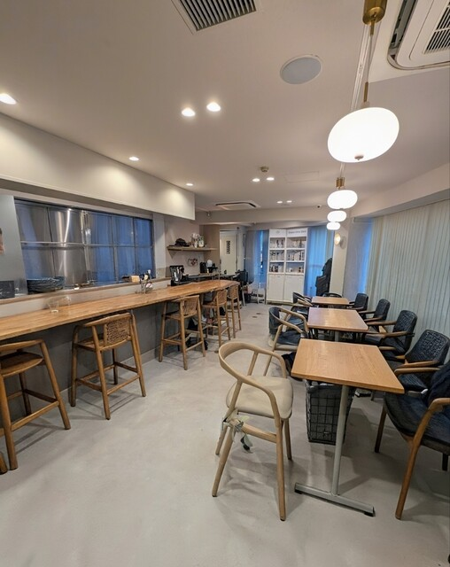
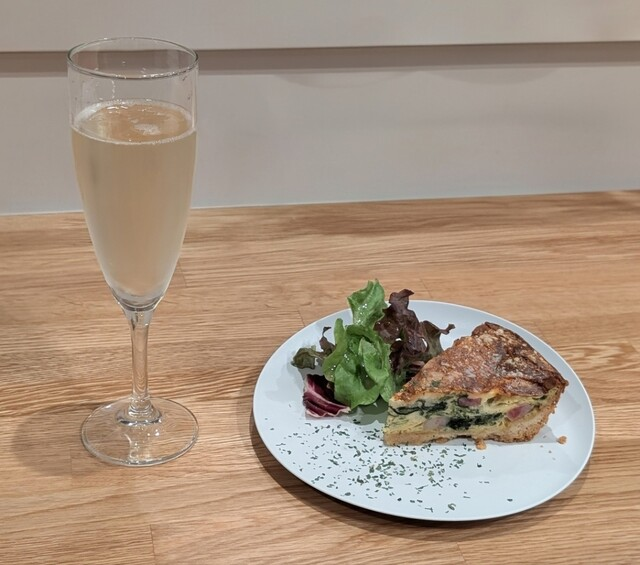
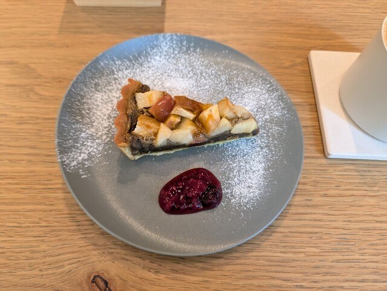
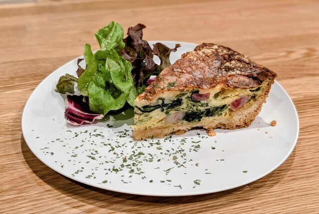
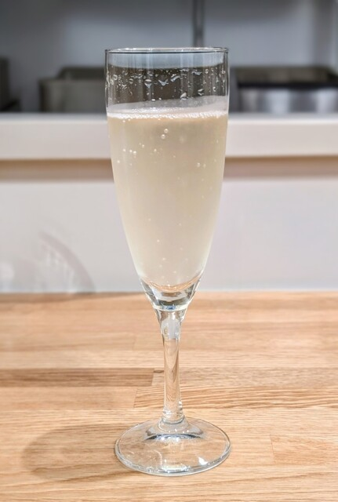
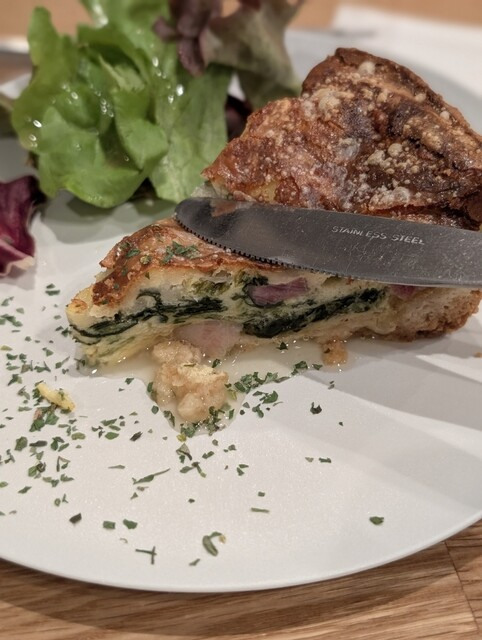
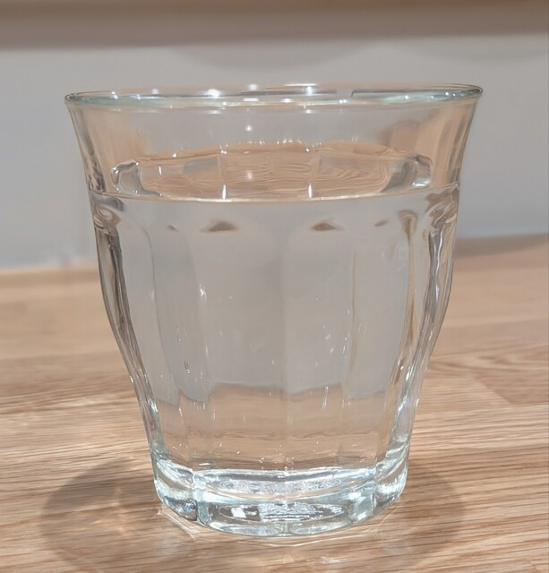
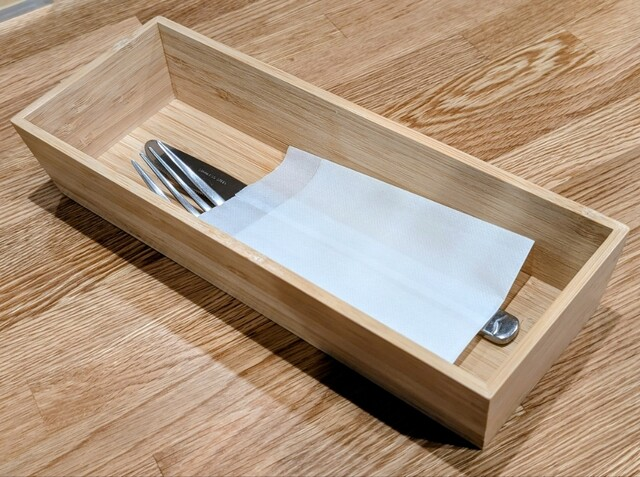
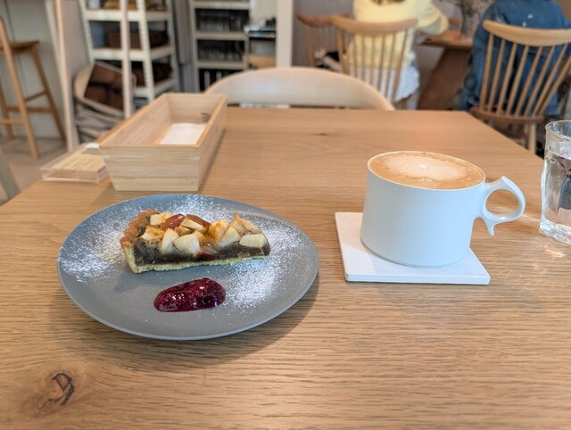
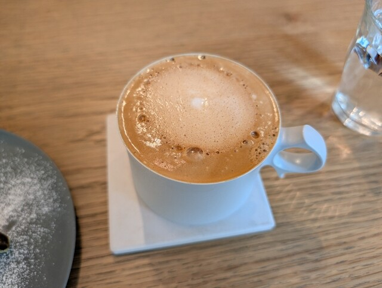

1 min from Shinjuku-Sanchome Station. Sommelier-selected natural wines, specialty coffee & Italian cuisine.





Just a 1-minute walk from Exit A1 of Shinjuku-Sanchome Station. We are a calm, hidden Nordic-style retreat on the 5th floor of Daishin No. 2 Building.
Our sommelier-certified owner carefully selects each natural wine, paired with specialty coffee made from organic beans. During the day, enjoy a relaxed cafe time with handcrafted tarts; in the evening, savor Italian-inspired cuisine alongside wine in a sophisticated dining atmosphere.
"murmure" means "whisper, murmur" in French. Step away from the noise of daily life, and spend precious time with the people who matter most.


A look at our interior atmosphere, food, and drinks.
| Name | murmure cafe et table |
|---|---|
| Genre | Cafe / Italian / Wine Bar |
| Address | 3-31-1 Shinjuku, Shinjuku-ku, Tokyo Daishin No. 2 Building 5F |
| Nearest Station | Shinjuku-Sanchome Station, Exit A1, 1 min walk |
| Hours | 12:00–22:00 L.O. Food 21:00 / Drinks 21:30 |
| Closed | Tuesdays |
| Seats | 26 seats (max reservation 12) |
| Budget | Lunch ¥1,000–¥1,999 Dinner ¥4,000–¥4,999 |
| Smoking | Non-smoking (all seats) |
| Parking | None |
| Phone | 03-6273-2876 |